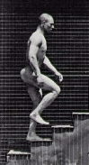
Muurschildering W2Fabriek

Solotentoonstelling Museum Slager
Participatieproject in sluishuis
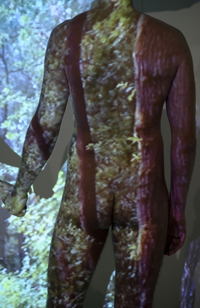
Video-installatie Stedelijk Museum 's-Hertogenbosch
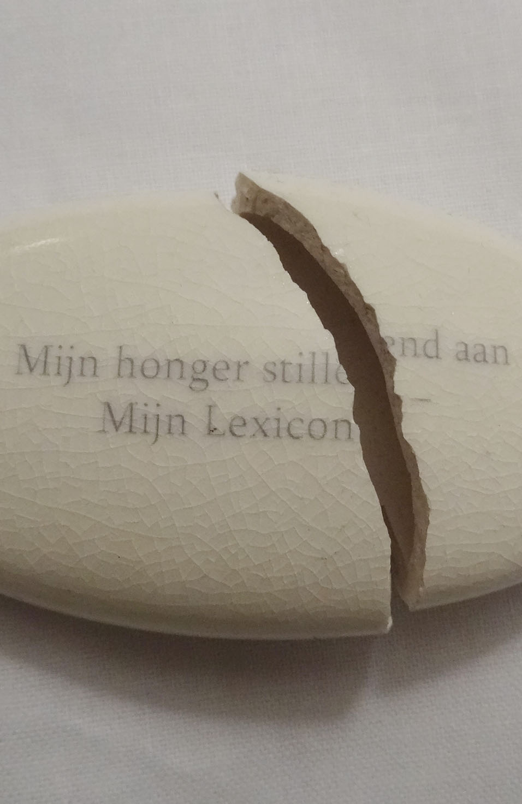
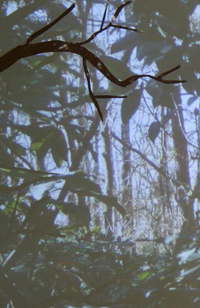
Installatie Willem2fabriek Den Bosch


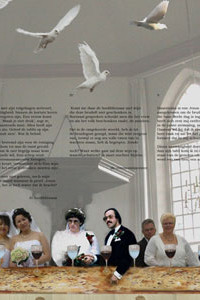
Broekman i.s.m. dichter Victor Vroomkoning, bruidsparen, het Hooftbestuur, en de protestantse kerk in Boxtel. Verfilmde performance/installatie.
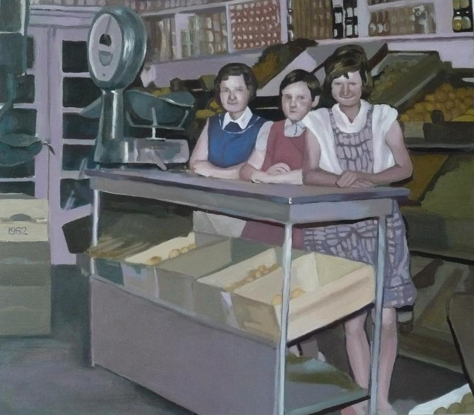
Serie schilderijen uit project 'De Firma Broekman'.
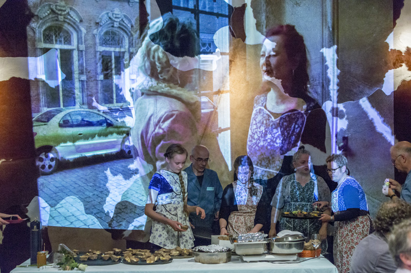
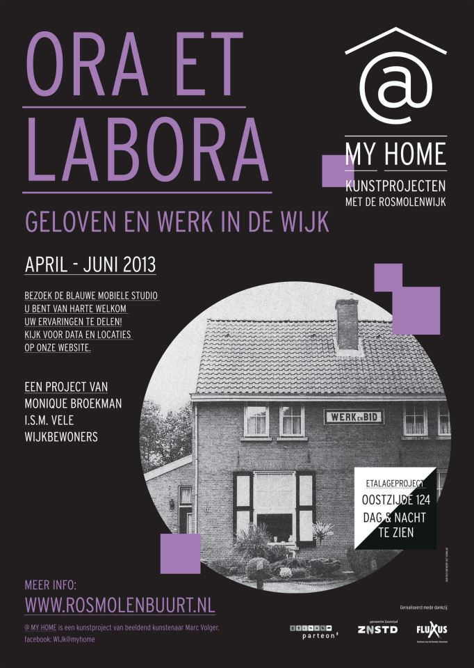
Gefilmde gesprekken over werken en geloven in de Rosmolenwijk in Zaandam.
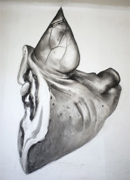
Multidisciplinair project rond de sloop van een wijk uit de jaren 20.

Een geschilderd groepsportret van een wijk in Breda.

Installatie van oude groentewinkel;
pasteltekeningen, film, stamppot, winkelinterieur.

Op reis door Benheze. Een verzameling verhalen; geluidsopnames en schilderijen.
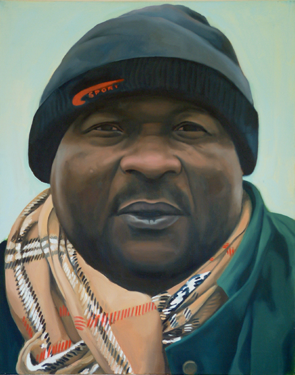
Project in asielcentrum in Westende (B). Serie portretten in olieverf, foto's en tekst in dagboek.

Het ontstaan, heden en toekomst van de metaalindustrie in de gemeente Heusden. Installatie van monumentale muurschilderingen, films, foto's, interviews.
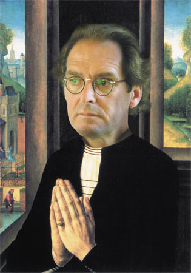
Project in de openbare ruimte van 's-Hertogenbosch. Fotomontages op zeildoeken incl.rondvaart.
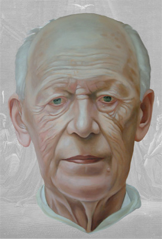
Project i.s.m. de Abdij van Berne; schilderijen en een openbare briefwisseling over religie en kunst.

Interactief project in opdracht van het CBK i.s.m. de Bieb in Den Bosch.

Een mobiele plattegrond reist door Sint-Michielsgestel. Een verzameling gefilmde verhalen.
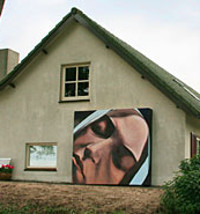
Reisgeschiedenissen van Poolse seizoenarbeiders, bedevaartgangers en vluchtelingen in sint-Michielsgestel. Schilderijen en interviews.
.jpg)
Door 'cultureel ondernemer alias parlementair hofschilder' M.M. Broekman i.s.m. tweede kamerleden. Interviews en olieverfportretten.

Kunstenaars tegelijkertijd aan het werk bij Nova Zembla.

Werkperiode in gastatelier van kloosterhotel ZIN in Vught.